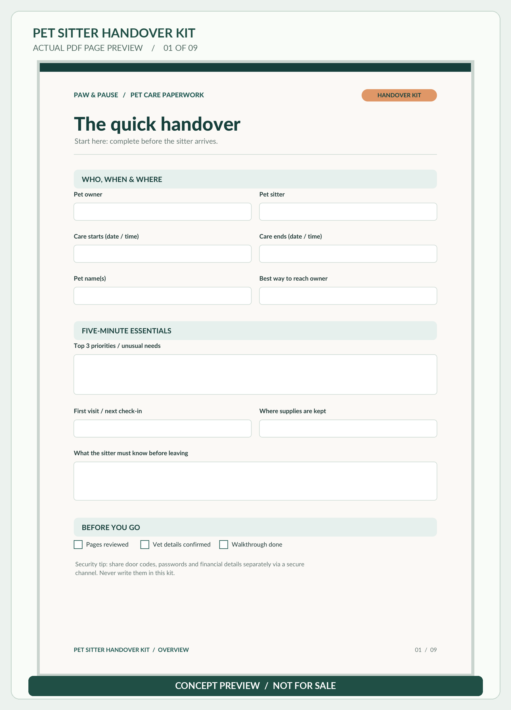
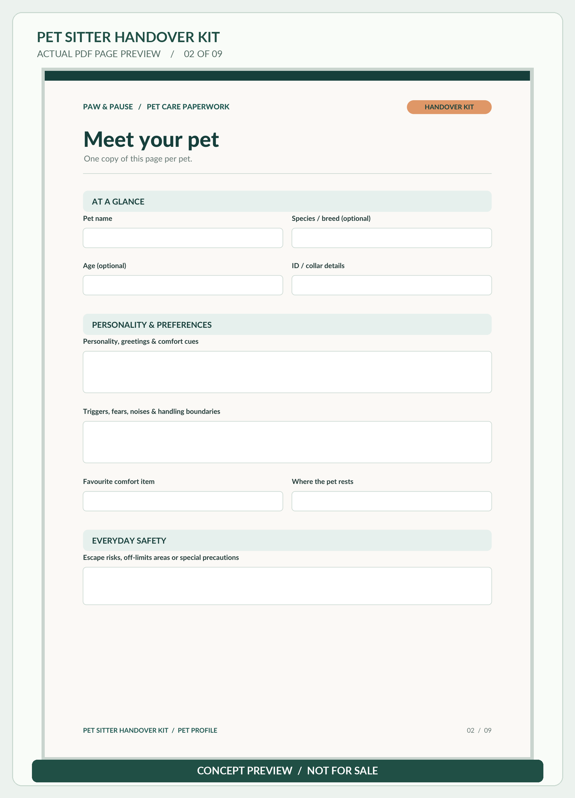
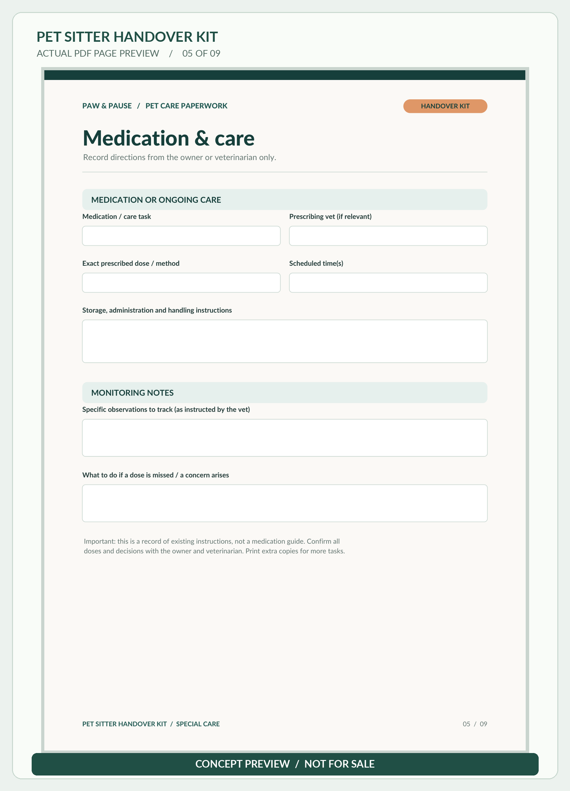
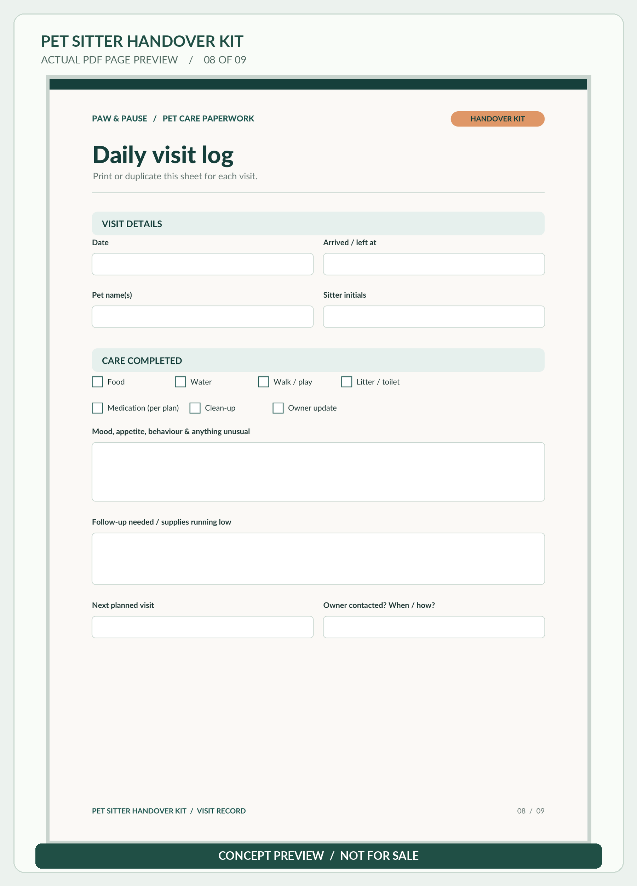

Follow the familiar routine
Keep meals, walks or litter care, comfort cues and house rules together instead of scattered across messages.
PET CARE NOTES · NINE-PAGE PDF KIT · CONCEPT PREVIEW
Give your trusted pet sitter an organized handover for feeding, daily routines, medication notes, important contacts, home safety and visit updates. The prepared PDF kit has nine fillable, printable pages in A4 and US Letter.
Made for dog and cat owners preparing a sitter for care at home.
Not available to buy or download.

THE LITTLE THINGS ADD UP
From dinner portions to favourite hiding spots, give your sitter a guide they can actually use — without the last-minute message scramble.
Keep meals, walks or litter care, comfort cues and house rules together instead of scattered across messages.
Give the sitter one place to find your number, a backup contact and regular or emergency veterinary clinic details.
Use the daily visit log and final handover page to note care completed, unusual observations and anything to follow up.
NINE PAGES. ONE THOUGHTFUL SYSTEM.
The same original layouts in A4 and US Letter, prepared for an organized pet sitter handover.
See the actual page mockupsThe A4 and US Letter PDFs contain the same nine page designs. Form entry requires a compatible PDF reader; you can also print and write by hand.
This is a blank organization tool, not veterinary advice or emergency authorization. Keep door codes, passwords and payment details out of shared care sheets; exchange sensitive access details separately and securely.
TAKE A CLOSER LOOK
These are mockups of the actual kit PDF pages, not a physical product or an editable website template.

INSIDE THE ACTUAL PDF
These four individual previews show the actual unfilled A4 PDF artwork, not example customer details. Pages 01, 02, 05 and 08 are shown; the A4 and US Letter kits contain the same nine page designs. Concept preview only — not for sale or download.

Blank quick handover page: dates, sitter details and key care notes.

Blank pet profile page: temperament, habits and preferences.

Blank fields for owner- or veterinarian-provided care instructions, not medical advice.

Blank daily visit log to record observations and completed sitter visits.
Four selected pages are pictured. The prepared kit contains nine layouts in each paper size. This website does not provide the PDF or collect your pet's details.
SIMPLE BY DESIGN
Two paper sizes. The same nine page layouts. A PDF-based workflow that fits how you prefer to prepare.
Pick A4 or US Letter. Both versions include the same nine designs.
Enter details using a compatible PDF reader; saving form entries depends on the reader and device. Or print and write by hand.
Share completed care notes privately with your trusted sitter. Keep passwords and entry codes separate.
GOOD TO KNOW
No. This is a concept preview of a prepared digital kit. There is no store, checkout, payment or public download on this page.
Two versions of the same nine-page Pet Sitter Handover Kit: one A4 PDF and one US Letter PDF, plus a short usage guide. They are nine unique layouts, not eighteen.
The PDFs contain fillable form fields. A compatible PDF reader is needed, and saving entered details can differ between devices and apps. You can also print the pages and fill them in by hand.
The blank pages can be customized to your individual dog or cat's daily care, feeding and routine. Use separate pet-profile copies when useful.
No. It records instructions provided by the owner or veterinarian. It does not prescribe treatment, change medication or grant legal or financial authorization.
This page has no contact forms, sign-up, payment processing, cookies or on-page analytics scripts. The website hosting provider may process ordinary server access logs under its own terms.
CONCEPT PREVIEW ONLY
Explore how nine simple care pages can help you brief a sitter. This remains a concept preview, not a live shop.
Not available to buy or download.
Back to top ↑